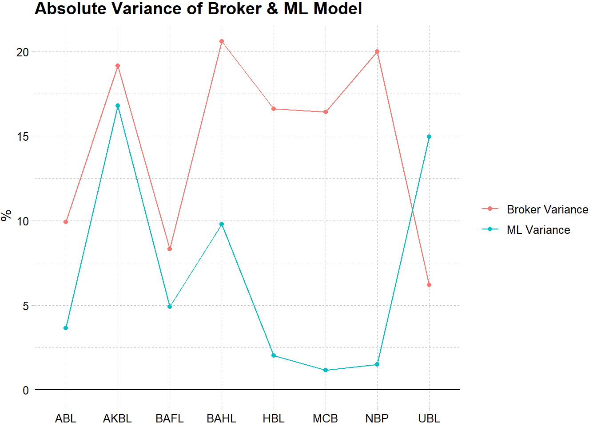

Corporate profitability is crucial signal for investment and business valuation as they are a key indicator of a company’s success and the development of its equity. Here, we present a machine learning method for Bank’s Net Interest Income (NII) nowcasting based on completely publicly available data that can outperform human analysts.
Nowcasting is a reasonably new word; at least in economic finance. It is either the opposite of forecasting or simply a pun on the word ‘forecasting’. The term nowcasting is a contraction of ‘now’ and ‘forecasting’. For this purpose, finance analysts generate such forecasts using their individual methodologies, which are combined to an Analyst Consensus forecast. These Analyst Consensus forecasts are provided shortly after the beginning of each quarter
Variables used for earnings forecasts
We consider an extensive collection of public signals available at each point in time, summarized into three categories: firm specific variables, macroeconomic variables, and industry specific variables.
Firm fundamentals
We consider banks fundamental variables related to Net Interest Income. We obtain the data from quarterly financial reports of the banks
- Total Deposits
- Net Loans
- Securities Held To Maturity
- Loan Loss Allowances
- Interest Bearing Deposits
- Other Deposits
- Other Short Term Borrowings
- Securities For Sale
- Total Investment Securities
- Investment to Deposit Ratio
- Investment to Deposit Ratio(HTM Securities)
- Investment to Deposit Ratio(AFS Securities)
- Advances to Deposit Ratio
Banking Industry Variable(Balance Sheet Items)
We consider several banking industry variables that are related to Net Interest Income. We Obtain the form the data provided by State Bank of Pakistan(SBP)
- Investment to Deposit Ratio
- Advances to Deposit Ratio
- Advances Net of Provision
- Balances with Other Banks
- Borrowings
- Investments
- Provisions
- Bills Payable
- Deposits And Other Accounts
- Lending To Financial Institutions
- Sub Ordinated Loans
Macroeconomic variables
We consider several macroeconomic variables that can affect banks profitability. We obtain the from the real-time data set provided by State Bank of Pakistan(SBP).
- WTI-Oil(USD/bbl)
- KIBOR
- 10 Year PKRV
- Yield Spread
Read the data:
library(tidyverse)
library(janitor)
library(recipes)
library(RCurl)
library(zoo)
library(caret)
url_data <- getURL(
"https://raw.githubusercontent.com/AzamYahya/bank_nii/main/data/NII_df.csv")
banking_df <- read.csv(text = url_data)
colnames(banking_df) <- make_clean_names(colnames(banking_df))The next step to create ratios from firms and indutry fundamentals. These includes Advances-to-Deposit Ratio and Investment-to-Deposit Ratio. Yield Spread is another important metric which is difference between the quoted rate of return on different debt instruments which often have varying maturities. We calculate yield spread as yeild spread between 10-Year PIB and 3-month Kibor.
banking_df <- banking_df %>% mutate(adr = net_loans/total_deposits) %>% #ADR
mutate(idr = total_investment_securities/total_deposits) %>% #IDR
mutate(idr_htm = securities_held_to_maturity/total_deposits) %>% #HTM/Deposit
mutate(idr_afs = securities_for_sale/total_deposits) %>% #AFS/Depsoits
#industry IDR
mutate(adr_industry = advances_net_of_provision/deposits_and_other_accounts) %>%
###industry IDR
mutate(idr_industry = investments/deposits_and_other_accounts) %>%
#### Yeild Spread
mutate(sec_spread = pakistan10ybm - pak3mbm) %>%
##remove banking industry non-important features
select(-deferred_tax_assets, - deferred_tax_liabilities)After creating ratio’s, it now time to create variable that incorporates the quarter effect. We will also remove outliers and will remove observation before 2013 Q2 due to non-availability of data for all features.
##create a quarter variables
banking_df2 <- banking_df %>% separate(quarter, c("year", "quarterly"), remove = F) %>%
select(-year) %>% mutate(quarterly = as.factor(quarterly)) %>%
mutate(banks = as.factor(banks))
###remove outlier
remove_outliers <- function(x, na.rm = TRUE, ...) {
qnt <- quantile(x, probs=c(.1, .9), na.rm = na.rm, ...)
H <- 1.5 * IQR(x, na.rm = na.rm)
y <- x
y[x < (qnt[1] - H)] <- NA
y[x > (qnt[2] + H)] <- NA
y
}
banking_df2$quarter <- as.yearqtr(banking_df2$quarter)
banking_df2 <- banking_df2 %>% group_by(banks) %>%
fill(-c("banks", "quarterly", "quarter", "net_interest_income"),
.direction = "down") %>%
filter(quarter > "2013 Q2") %>%
filter(quarter != as.yearqtr(Sys.Date())) %>%
group_by(banks) %>%
mutate_at(vars(-one_of("banks", "quarter", "quarterly", "net_interest_income")),
~ remove_outliers(.))Model Building
After getting the data, it now time for feature selection and engineering which aimes at building better models by focusing on the predictors. Better depends on the context of the problem but most likely involves the following factors: accuracy, simplicity, and robustness.
To acheive better models, we engineering the features by doing the following step:
- Remove Zero Variance Variables
- Remove near Zero Variance Variables
- Impute the Missing Values
- Power transformation using Yeo-Johnson transformation
- Create Lag variable for outcome variable
- Create 3-period moving average
- One-hot encoding for incorporating Categorical effect of individual bank and quarter
We will use recipes library to engineer the features. We and use the 3Q 2020 for testing our predic
library(recipes)
#intial recipe
bank_recipe <- recipe(net_interest_income ~ ., data = banking_df2)
library(themis)
##because some variable are negative use Yeo Johnson transformation
#remember to inverse the yeo johnson for interpretation
near_zero_variance <- bank_recipe %>%
step_rm("quarter") %>% #remove timestamp
step_zv(all_numeric()) %>% # remove zero variance
step_nzv(all_numeric()) #remove near zero variance
library(quantrecipes)
transformation <- near_zero_variance %>%
step_bagimpute(all_numeric(), -net_interest_income) %>%
step_YeoJohnson(all_numeric(), -net_interest_income) %>%
step_nzv(all_numeric()) %>%
#step_log(all_outcomes()) %>%
step_lag(all_outcomes(), lag = 1:3)
train_obj <- prep(transformation, training = banking_df2)
train_data <- bake(train_obj, banking_df2)
train_data <- train_data %>% group_by(banks) %>%
mutate_at(vars(-matches("banks|quarterly|net_interest_income")),
~ runMean(., n = 3))
###get the last row of every bank
to_be_predicted <- train_data %>% group_by(banks) %>%
slice(n())
##One hot encoding for categorical variable
dmy <- dummyVars(" ~ .", data = to_be_predicted)
binary_df <- data.frame(predict(dmy, newdata = to_be_predicted))We use the last row to test our prediction
##remove last row from train
train_data <- train_data %>% group_by(banks) %>%
slice(-n()) %>% na.omit()
##One hot encoding for categorical variable
dmy <- dummyVars(" ~ .", data = train_data)
train_data <- data.frame(predict(dmy, newdata = train_data))Now to train model, we use Cubist model which is a rule based model.
set.seed(100)
cubist_fit <- train(net_interest_income~. ,data = train_data,
method = "cubist")
cubist <- data.frame(bank = unique(banking_df$banks), cubist = predict(cubist_fit, binary_df)/1000000)
##change name into PSX names
cubist <- cubist %>%
mutate(cubist = round(cubist,0)) %>%
mutate(bank = gsub(".KA", "", bank)) %>%
mutate(bank = case_when(.$bank == "ASBK" ~ "AKBL",
.$bank == "BKEQ" ~"BAHL",
.$bank == "FYBL" ~ "FABL",
.$bank == "NBPK" ~ "NBP",
TRUE ~ as.character(bank)
))Now to compare the result with actual output. We can see in the table below that Machine Learning model outperforms analyst’s estimate of 3Q2020 Net Interest Income.
url_data <- getURL(
"https://raw.githubusercontent.com/AzamYahya/bank_nii/main/data/brokers_esimate_csv.csv")
sellside_est <- read.csv(text = url_data, stringsAsFactors = F)
colnames(sellside_est) <- make_clean_names(colnames(sellside_est))
print(sellside_est)
## bank topline_securities intermarket_securities optimus_capital_management
## 1 ABL NA 10746 NA
## 2 AKBL NA NA NA
## 3 BAFL 9538 10794 10830
## 4 BAHL 13996 NA 13029
## 5 MCB 16914 18013 17571
## 6 NBP 25307 NA NA
## 7 HBL NA 27800 31754
## 8 UBL 18100 18878 18862
## arif_habib_securities actual_net_interest_income
## 1 11188 12174
## 2 6527 8073
## 3 9561 11104
## 4 NA 17017
## 5 16181 20547
## 6 25016 31449
## 7 NA 35709
## 8 17921 19656
###join the our estimates with the actual and brokers estimates
combine_df <- sellside_est %>% mutate_at(vars(-one_of("bank")),
~ as.numeric(as.character(.))) %>%
pivot_longer(names_to = "broker", values_to = "estimate", -c(
"bank", "actual_net_interest_income")) %>%
group_by(bank) %>% summarise(avg_est = mean(estimate, na.rm = T),
actual_net_interest_income = mean(
actual_net_interest_income, na.rm = T
)) %>%
left_join(.,cubist, by = "bank") %>%
rename(`Broker Estimate` = avg_est,
`Actual NII` = actual_net_interest_income,
`ML Model` = cubist)
knitr::kable(combine_df, caption = "Net Interest Income(PKR MN)") %>% kableExtra::kable_styling(bootstrap_options = c("striped", "hover", "condensed", "responsive"))
## Warning in kableExtra::kable_styling(., bootstrap_options = c("striped", :
## Please specify format in kable. kableExtra can customize either HTML or LaTeX
## outputs. See https://haozhu233.github.io/kableExtra/ for details.| bank | Broker Estimate | Actual NII | ML Model |
|---|---|---|---|
| ABL | 10967.00 | 12174 | 12618 |
| AKBL | 6527.00 | 8073 | 9428 |
| BAFL | 10180.75 | 11104 | 11650 |
| BAHL | 13512.50 | 17017 | 15352 |
| HBL | 29777.00 | 35709 | 34984 |
| MCB | 17169.75 | 20547 | 20306 |
| NBP | 25161.50 | 31449 | 31920 |
| UBL | 18440.25 | 19656 | 22596 |
If we plot the absolute variance, the machine learning model average variance is about 5% whereas average variance for analyst estimate is approx 15%.
combine_df %>%
mutate(`Broker Variance` = abs((`Actual NII` - `Broker Estimate`)/`Actual NII`)*100, `ML Variance` = abs((`Actual NII` - `ML Model`)/`Actual NII`)*100) %>%
select(bank, `Broker Variance`, `ML Variance`) %>%
pivot_longer(names_to = "Source", values_to = "variance", -bank) %>%
ggplot(aes(x = bank, y = variance, group = Source, colour = Source)) + geom_point()+ geom_line() + geom_hline(yintercept = 0)+
ggthemes::theme_pander()+ ggtitle("Absolute Variance of Broker & ML Model")+theme(axis.title.x = element_blank(), legend.title = element_blank())+ labs(y = "%")
Conclusion
Comparing the result shows that Cubist algortihms has outperformed on average every bank except UBL. The pricing of assets relies significantly on the forecasts of associated cashflows. Analysts’ forecasts of earnings are often used as a measure of expectations, despite the common knowledge that these forecasts are on average biased upward. Namely, a structural misalignment obtains between these earnings forecasts and their subsequent lower realizations.
This new measure is useful not only as an input to asset-pricing exercises but also as an available real-time benchmark against which other forecasts can be compared. In addition to these asset-pricing results, our findings also have critical implications in corporate finance. Managers of firms for which the earnings forecast is most upward-biased issue more stocks. This finding indicates that managers are at least partially aware of analyst biases or the associated influence on asset prices.
This research applies machine learning approach to net interest income, and the approach can easily be extended to other variables and in other sectors.